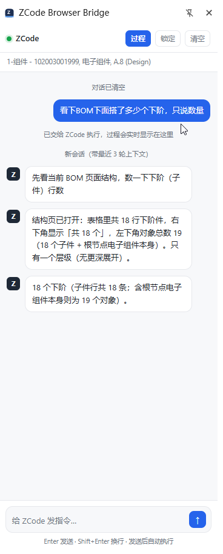

main ▾1 Branch · 3 Tags
▸ extension side panel + agent
▸ icons icon set
{} manifest.json MV3 manifest
{ } background.js long-poll + commands
{ } content.js floating launcher
◇ sidepanel.html chat UI
{ } sidepanel.js event stream
▸ bridge local bridge
{ } server.mjs MCP + HTTP
{ } hook-inbox.mjs prompt hook
▸ tools smoke tests
{ } install.mjs one-shot installer
▤ README.md docs
⚖ LICENSE MIT
About
让 AI 直接操作你正在用的浏览器：扩展装在浏览器里，登录状态、书签、插件都在，
AI 能看清当前网页、帮你点按钮填表单，每一步都显示在右侧面板里。
标准 MCP 接口，接到你自己的 Agent 就能用。
browser-automation
chrome-extension
edge-extension
mcp
ai-agent
Releases Latest
Latest
v1.1.0
2026-11-19 · MCP 通用接口 · 小白安装指南
Languages
● JavaScript 76% · ● HTML 16% · ● CSS 8%
Agent Browser Bridge · 让 AI 操控你自己的浏览器
versionv1.1.0
manifestMV3
interfaceMCP
platformEdge 114+ / Chrome 114+
licenseMIT
一句话：装一个浏览器扩展，AI 就能替你在你自己的浏览器里干活
你平时怎么用浏览器，装完后还是怎么用——AI 能看到的网页就是你能看到的网页，
你登录过的网站 AI 直接就能操作，不用重新登录。
它到底能干嘛？（举几个例子）
- 「看一下我今天有几条待办，都念给我听」—— AI 打开你的待办页面，读取并汇报
- 「帮我把这个报销表填了，金额按昨天说的」—— AI 在页面上逐项填写，你最后点提交
- 「把这个页面的商品截图发给我」—— AI 截图当前页面给你看
- 「盯着这个页面，价格变了告诉我」—— AI 定期读取页面内容
AI 的每一步操作都会显示在浏览器右侧的小面板里，它做了什么你看得一清二楚。 面板上还有一个「锁定」按钮，点一下 AI 立刻失去操作权限。

实际使用画面：面板里说「看看 BOM 下面搭了多少个子阶，只说数量」，AI 读完页面直接回答，过程全程可见
3 步装好（全程约 10 分钟，不需要会编程）
-
下载并解压
点本页上方绿色
Code按钮 →Download ZIP，解压到一个固定的文件夹（别放「下载」或「临时」目录，删了就失效）。 -
把安装文档丢给 AI
打开项目里的
INSTALL.md，全选复制，粘贴给你的 AI（ZCode / Claude / Cursor 等都行），说：「帮我按这个文档安装」。 -
手动加载一下扩展
浏览器安全限制，这步必须自己点（就 4 下）：地址栏输入
chrome://extensions或edge://extensions→ 打开「开发者模式」→ 点「加载已解压的扩展程序」→ 选extension文件夹。
装好后怎么确认成功了？
随便打开一个网页，右侧边缘出现一个悬浮按钮，点开面板、顶部圆点变绿色，就成了。
然后对 AI 说一句「检查浏览器连接」试试。
这个项目和我们自己的 AI（ZCode）是什么关系？
这个项目原本是我们为自己的 AI Agent「ZCode」做的——所以你会在代码和界面里看到一些 ZCode 的痕迹， 那是历史原因。但项目本身是通用的「AI ↔ 浏览器」连接桥：
- 你的 AI 不是 ZCode？没关系。只要你的 AI 工具支持 MCP（Claude Desktop、Cline、Cursor、Ctrae……基本都支持），改一段配置就能直接用，README 里有现成的 JSON 可抄。
- 想给自己的 Agent 做一个一样的？欢迎照着复刻：架构、协议、安全机制全在这个仓库里，MIT 协议，改名随便改。
为什么不另开一个浏览器（技术背景，可跳过）
市面上大部分「AI 操控浏览器」的方案要新开一个空白浏览器实例，你还得重新登录一遍所有网站。 原因是 Chrome 137+ 禁止对日常使用的浏览器开放调试端口（防止恶意程序偷 cookie），走老路（CDP）只能另起实例。
这个项目换了个思路：扩展是浏览器「内部」的官方组件，用它操作你的浏览器不违反任何安全规则， 所以能直接用你当前的 profile——登录态、Cookie、插件全都在。
| 传统方案（新开浏览器） | 本项目（你自己的浏览器） | |
|---|---|---|
| 浏览器实例 | 必须新开一个 | 就用你现在这个 |
| 登录态 / Cookie | 空白，全部重新登录 | 现成的，直接能用 |
| 「正在被控制」提示条 | 有 | 无 |
| 网络请求拦截 | 支持 | 不支持（安全边界，见 README） |
安全吗？
- 桥接服务只监听本机（127.0.0.1），外部网络连不进来，且所有通信带独立 token 鉴权
- AI 读页面时，密码框、卡号自动打码成
•••• - 受保护页面（
chrome://设置页、扩展商店）直接拒绝操作 - 侧栏「锁定」按钮是急停开关，点一下 AI 立刻无法操作
- AI 的每个动作、每条结果都在侧栏里可见，不留暗箱
给进阶用户：接到你自己的 Agent
桥在本地暴露一个标准 MCP server（stdio）+ 一组本机 HTTP 接口。 支持 MCP 的 Agent 加一段配置就能用：
{
"mcpServers": {
"agent-browser-bridge": {
"command": "node",
"args": ["<项目路径>/bridge/server.mjs"],
"env": { "ZCB_PORT": "8917" }
}
}
}重启 Agent 后即可获得 15 个 browser_* 工具：
读页面快照、点元素、填表单、按键、滚动、截图、等待、开标签页……
完整工具表、HTTP 协议、复刻改造指南见仓库里的 README.md。
License: MIT · 这是「AI 操控自己浏览器」的一种参考实现，欢迎 Fork 与复刻 · 仅供个人与团队内部使用，请遵守所在环境的 IT 规定